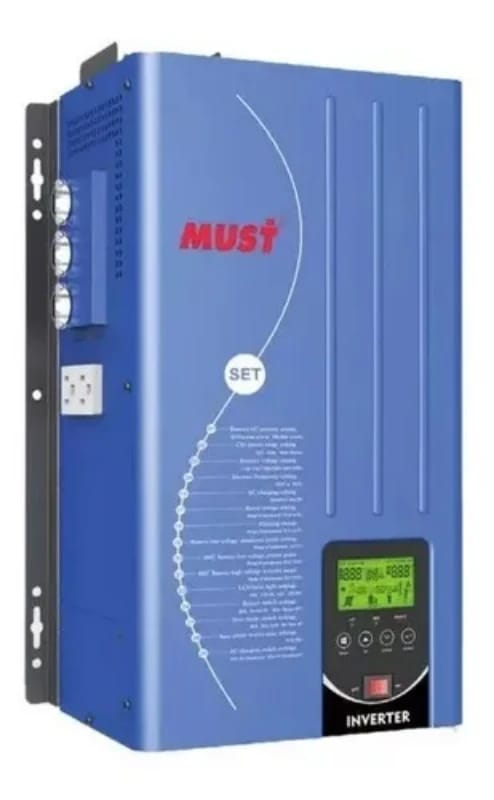
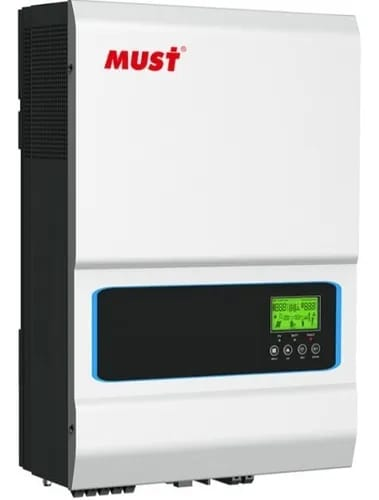
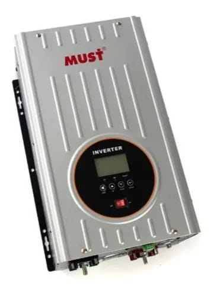
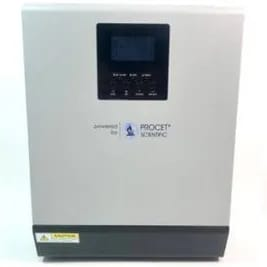
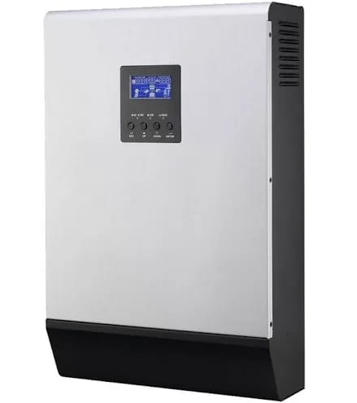
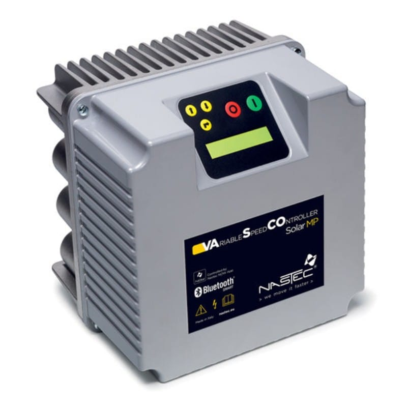
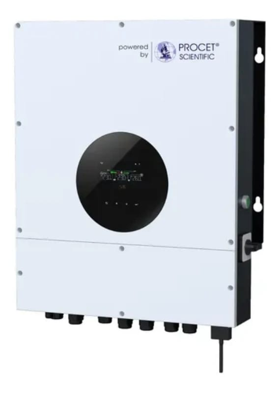
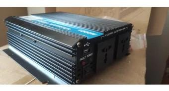
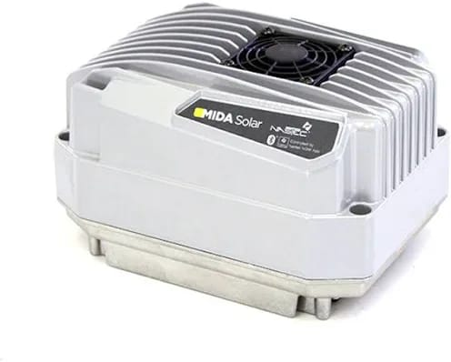

|
|
||||||||||
| |
|
||||||||||
Productos / Inversores |
 |
 |
Permite convertir los sistemas de bombeo tradicionales en sistemas de bombeo accionados mediante la energia solar renovable. 12-85 Amp, 3-50 Hp Potencia nominal de 2KW/3KW/4KW/5KW. Onda senoidal pura. Configurable desde la pantalla LCD. Cuenta con regulador de carga solar MPPT de 60A/80A incorporado Potencia de 1500w, inversor onda senoidal pura. Voltaje de salida nomina RMS 100V/110V/120V AC. Voltaje de la batería 12V. Corriente de carga máxima de 45-25AMP. | ||||||||
|  |  |  | |||||||||
Inversor Híbrido 1000W 24V Voltronic Axpert MKS-ZERO LV. Es un inversor de onda senoidal pura capaz de trabajar con baterías de 24V |
Inversor Hibrido 2000W/24V Axpert Zero LV 2000Va/2000W. Producto nuevo de la categoría |
Salida de 2 lineas P-P 220VAC, L-N 120VAC. Su voltaje es de 230Vac con un rango de frecuencia de 50Hz/60Hz |
|||||||||
|  |  |  | |||||||||
Potencia de 6000VA/6000W. Boltaje de bateria de 48V.Su maxima de corriente de carga es de 120A |
Inversor Onda Modificada 2000w 12v. Salida en AC 110v |
Bombeo Solar MIDA 205 90-400 5A 0.75-1.5hp. Funciona tanto con bombas monofásicas como trifásicas. Pesa 2.6 kg. |
|||||||||
3174025264  oarodriguez@uniminuto.edu oarodriguez@uniminuto.edu |
|||||||||||
| Programacion Web Corporación Universitaria Minuto de Dios 25 de Agosto del 2022 |
|||||||||||